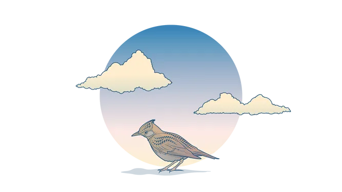
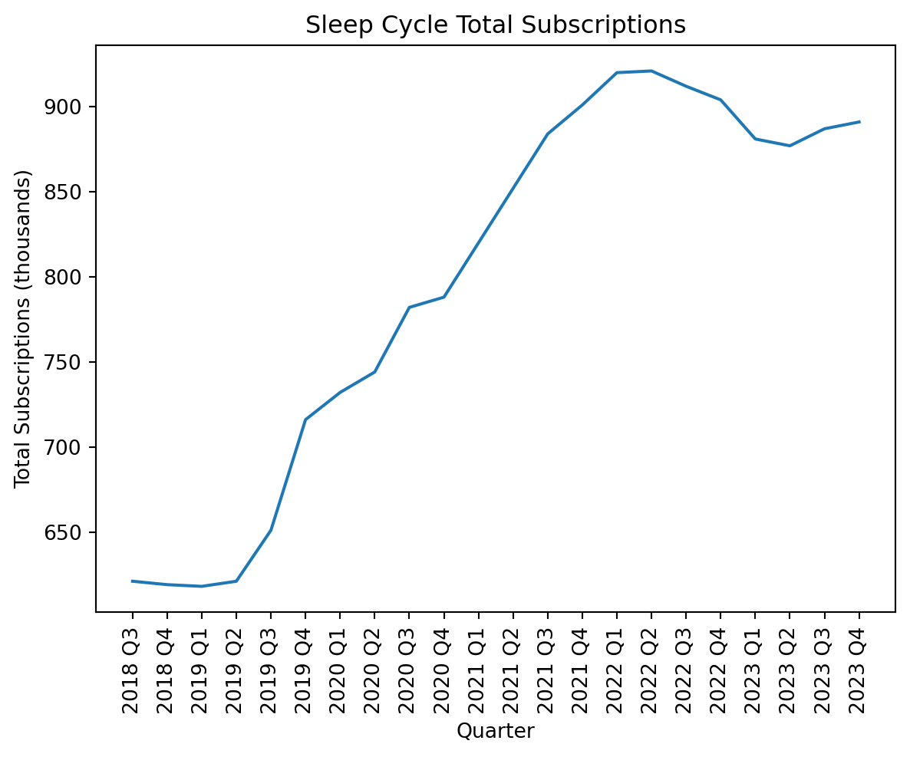
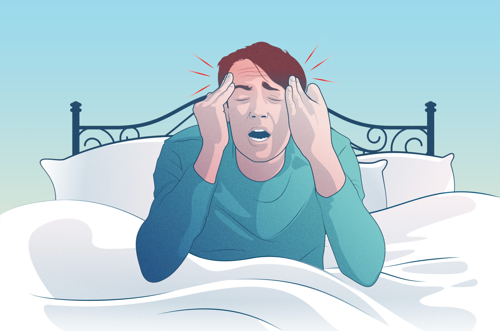
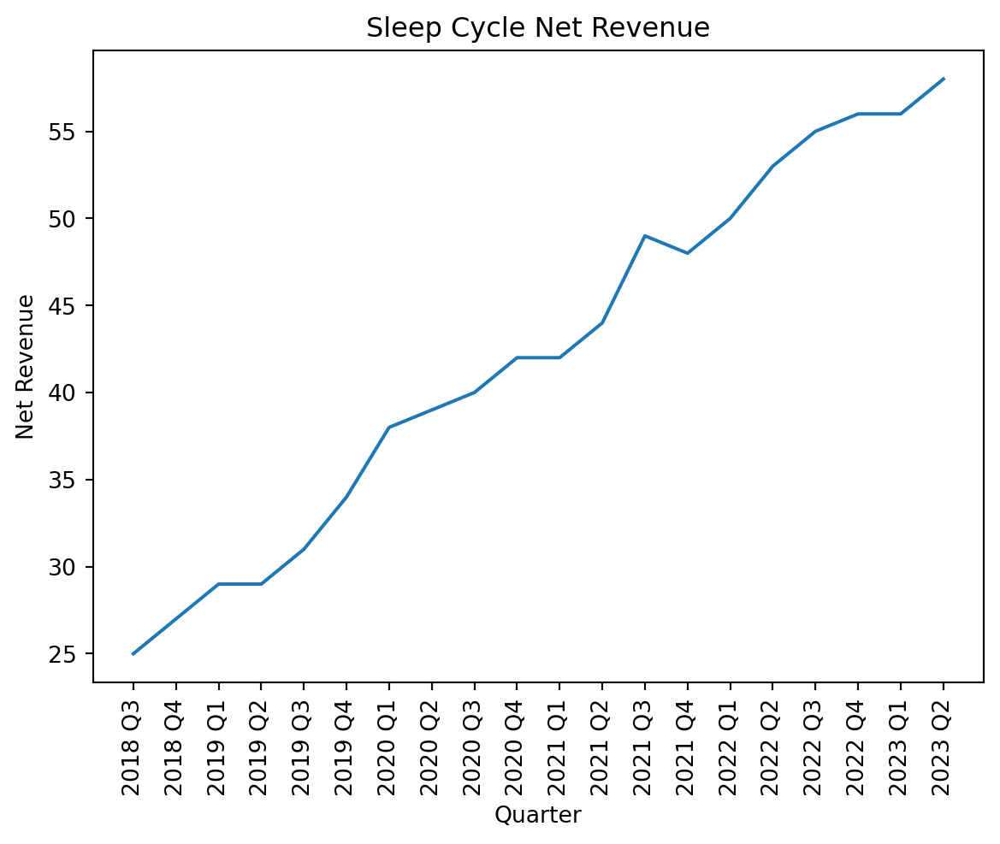
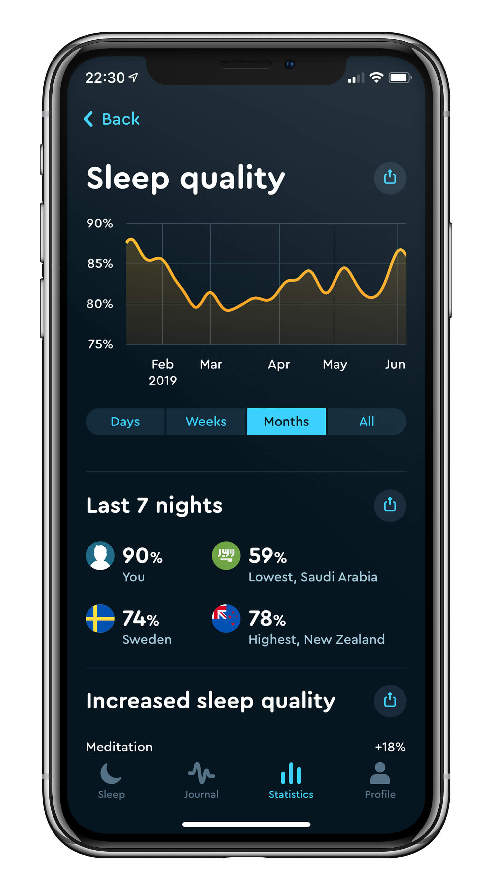
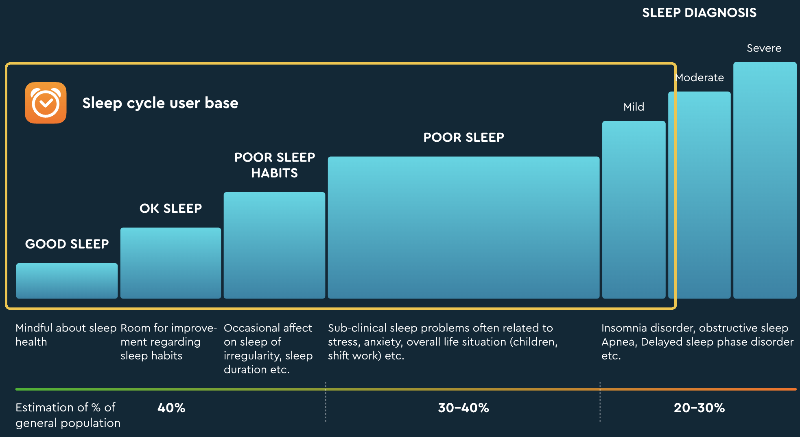
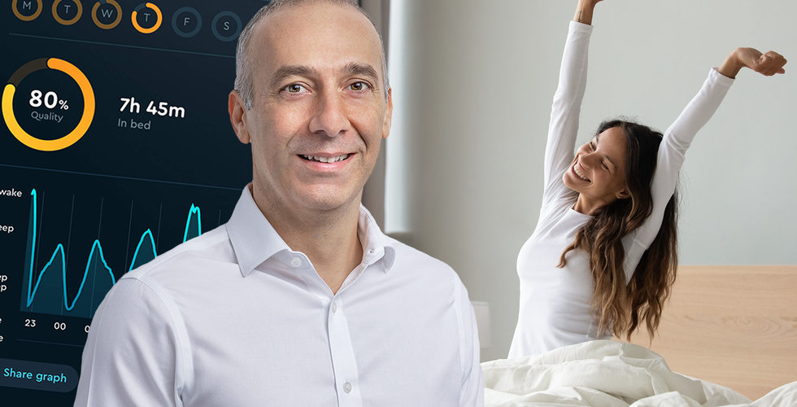

flowchart LR
B(Befintlig kundstock) --> A[Förnyar abonnemang]
A --> B
C{Nya kunder - 80% organiskt} --> B
B --> D(Churn - ca 55 procent per år)
E[Rekommenderad av vän] --> C
F[Söker runt på App Store eller Apple Hälsa] --> C
Aktiecase Sleep Cycle
aktieanalys
bolagsanalys
aktiecase
sleep
cycle
sleep cycle
Sleep cycle är den ledande sömnmonetoreringsappen i världen med sina 881k användare, stabila intäker, starka nettokassa och kapitalstarka ägare. På baksidan av Sleep Cycle lurar väldigt hög churn, svag kapitalallokering och ett nettoutflöde av kunder, dels drivet av högre priser. Antagligen siktar största ägarna på att köpa ut bolaget från börsen inom ett år, frågan är till vilket pris.
NoteDisclaimer
Tänk på att investeringar alltid innebär ett risktagande. Gör alltid din egen analys innan eventuell handel.
CautionUpdate: Eget ägande
18e maj 2025: Från när denna analys skrevs i mitten på 2023 från till nu, 18e maj har jag varit ägare i sleep cycle. Med bakgrund till den svaga utvecklingen i premiumanvändare och minskad personlig övertygelse över sleep cycles förmåga att faktiskt hjälpa till med sömnen för den bredare massan är min bedömning att antalet kunder kanske inte ska vara så många fler än de 900 tusen personer som använder bolagets premiumtjänster idag. Investeringstesen var förr att det var för billigt när budet kom samt att det var för billigt när Handelsbanken fonder sålde ut sig på 20-25 sek aktien, men efter det har det inte hänt så mycket och jag väljer därmed att sälja bolaget.
Jag anser det svårt att se hur Sleep Cycle ska använda sin sömndata för att monitisera den bättre utan att göra produkten sämre. Med ny utrustning som Apple och Garmin klockor är det allt fler som inte behöver sleep cycle för att mäta sin sömn. Det är princip en dyr väckarklocka med ett superfint UI just nu. Med dagens massiva utdelning som är densamma som cashflow visar det att bolaget inte hittar nya sätt att sysselsätta sitt kapital. Över tid kommer det att leda till att Sleep Cycle blir obselete. Anser det pekar på oklar strategi från styrelse och ledning.
Sammanfattning
Sleep Cycle är den ledande sömnmonetoreringsappen i världen med sina 881k användare, stabila intäkter, starka nettokassa och kapitalstarka ägare. På baksidan av Sleep Cycle lurar väldigt hög churn, svag kapitalallokering och ett nettoutflöde av kunder, dels drivet av högre priser. Antagligen siktar största ägarna på att köpa ut bolaget från börsen inom ett år, frågan är till vilket pris.
För den mer riskvillige kan Sleep Cycle vara värt ett bet. Vänder trenden med nettokunderna och churnen minskar så är dagens värdering mycket attraktiv, men tills dess kommer antagligen nettoutflödet att fortsätta då ARPU ska fortsatt upp enligt management. Jag väljer att stå på sidan tills vidare. Äger inga aktier.

Bakgrund
Sleep Cycles uppdrag är att förbättra den globala hälsan genom att få människor världen över att sova bättre. Med över två miljoner aktiva användare i fler än 150 länder världen över, är Sleep Cycle en av världens mest använda sömntjänster och den ledande mobila sömnapplikationen på marknaden. Sedan lansering 2009 har Sleep Cycle hjälpt miljoner människor förstå sina sömnvanor och förbättra sin sömn. Bolaget är noterat på Nasdaq Stockholm under tickern SLEEP och har sitt huvudkontor i Göteborg, Sverige.
I december 2022 kom ett bud på 42,5 SEK per aktie från grundaren Maciej Drejak, näst största ägaren Pierre Siri och en produktchef på Sleep Cycle för att köpa ut bolaget från börsen. Budet förföll under februari 2023 då för få aktier förvärvats. Nästa gång det är möjligt för trion att lägga ett bud igen är december 2023, 12 månader efter det första budet. Värt att notera är att Sleep Cycle hade en exordinärt stor utdelning på 142 MKR, vilket ger storägarna mycket mer likvider för att ge ett liknande bud igen.

Verksamheten
Sleep cycle distribueras genom en app med samma namn, som använder ljudupptagning när användare sover och analyserar denna ljuddata för att hjälpa användare att somna lättare, läsa av och analyserar sömnen under natten, väcka användaren i lätt sömnfas och ge insikt i hur sömnkvalitet på bästa sätt kan förbättras. Sleep Cycles affärsmodell är en prenumerationstjänst som kostar i snitt 264 SEK per månad. Betalningarna sker i förskott och har i stor utsträckning en återkommande karaktär. Bolaget själva anser sig ha en mycket skalbar affärsmodell vilket i sin tur bör vara bra för marginalerna då den rörliga kostnaden för en ny kund är väldigt låg. Jag anser att kommunikationen är oproffsig att säga att affärsmodellen är “100 procent skalbar”.
Efter ett besparingsprogram har bolaget nu runt 40 anställda med en omsättning per anställd på 5,6 miljoner. Under det senaste åren har det tillkommit en ny app som riktar sig till föräldrar som vill bevaka sina barns sömn. Till det huvudsakliga appen har en feature som mäter oljud i rummet tillkommit.
Kundanskaffning och churn för Sleep Cycle
I Q2 2023 på conference callet säger ledningen att det är en minskad aktivitet bland personer som söker runt på App Store och Apple Hälsa vilket leder till en försvagning av inflödet av nya kunder.
Churnen redovisas inte av bolaget, men vid noteringen 2021 sa bolaget att 45-50% av kunderna förnyar sina prenumerationer. Ledningen säger att det ligger kvar på denna nivå i november 2022 enligt Affärsvärlden. Jag anser att det låter obegripligt högt att ha en churn på runt 50-55 procent.
Antalet prenumerationer är ner senaste året

Antalet prenumerationer har ökat under en längre tid, men saktat in under senaste kvartalen. Samtidigt är det värt att se att omsättningen ökar då ARPU ökar.

Nettoomsättningen går upp

Net Revenue ser linjär ut, om vi antar att den fortsätter i samma trend så ökar nettoomsättningen med 1.8 miljoner per kvartal. Rullande på ett år är det då runt 28 miljoner eller till omsättningstillväxt på ca 10 procent. Nettoomsättningen ökar snabbare än vad tappet i kunder resulterar i.

| Apr-Jun 2023 | Apr-Jun 2022 | Jan-Jun 2023 | Jan-Jun 2022 | Jan-Dec 2022 | |
|---|---|---|---|---|---|
| Subscription revenue | 58108 | 52459 | 114365 | 102330 | 212534 |
| Number of subscriptions previous period (thousands) | 881 | 920 | 904 | 901 | 901 |
| Number of subscriptions current period (thousands) | 877 | 921 | 877 | 921 | 904 |
| ARPU (SEK) | 264 | 228 | 257 | 225 | 236 |
Förändringar i prenumeranter
| Apr-Jun 2023 | Apr-Jun 2022 | Percentage Difference | |
|---|---|---|---|
| Subscription revenue | 58108 | 52459 | 10.8 |
| Number of subscriptions previous period (thousands) | 881 | 920 | -4.2 |
| Number of subscriptions current period (thousands) | 877 | 921 | -4.8 |
| ARPU (SEK) | 264 | 228 | 15.8 |
Marknaden
Marknaden för Sleep Cycle är potentiellt väldigt stor, då appen kan användas på princip alla iOS och Android telefoner. I praktiken siktar sig Sleep Cycle mot en viss kundgrupp.

Det är i princip alla som inte har omfattande sömnproblem som mardrömmar och insomnia.
Vad säger användare?
Omdömen från personer på App Store klagar i princip alla i senaste omdömen på att det är för många uppmaningar till att betala för appen. Många påpekar att det kommer ut reklam varje gång de startar appen för någon premium på premiumtjänst. Tråkigt! Sammantaget verkar personer väldigt nöjda med tjänsten, många verkar vara väldigt trogna användare.
Ledning & styrelse
Maciej Drejak, grundaren av bolaget, intog nyligen sin plats i styrelsen och tillsatte en ny vd i bolaget: Erik Jivmark.
Sammantaget anser jag att det inte finns något anmärkningsvärt i styrelsen eller ledningen, men min känsla säger helt klart att det är Maciej Drejak som styr skeppet precis som Elon Musk styr X.com
Anna Broeng, styrelseordförande, har antagligen inte så mycket att säga till om när Maciej Drejak lyfter klubban och lägger nya bud. Hon har 10k aktier i bolaget, inte så mycket att veva med.
Budet från Velvet Cichlid
Velvet Cichlid budar på alla aktier i Sleep Cycle för SEK 42,5 SEK per aktie.
Budgruppen är Pierre Siri och Maciej Drejak tillsammans genom ett par företag samt produktchefen Petter Wallin. Tillsammans äger dessa runt 70 procent idag, vilket innebär att det saknas runt 20 procent för att få till ett tvångsinlösen av resterande delar av aktierna.
Grundaren Maciej Drejak säger till Affärsvärlden: ”Vi lever numera i en turbulent omvärld med stor ekonomisk osäkerhet som kommer få konsekvenser på bolagets möjligheter att växa. För att uppnå de tillväxt- och lönsamhetsmål som bolaget har satt, och för att bibehålla Sleep Cycles ledande marknadsposition i en högfragmenterad marknad, kommer långsiktiga investeringar behöva göras inom produktutveckling och marknadsexpansion. “Vår samlade bedömning är därför att dessa investeringar görs bättre i en privat miljö”, kommenterar grundaren Maciej Drejak.

Bland resterande ägare är det blandade miner, vissa är positiva, andra förargade och vill inte acceptera budet som det stod i början av februari. Jag gissar att om ett bud skulle komma in idag på runt 40 SEK per aktie så skulle aktieägarna nappa på det direkt. Antagligen räcker det med runt 34 SEK. Det är värt att notera detta, då det skapar ett golv för hur lågt som Sleep Cycle kan handlas innan ägarna kommer och ger ett bud igen.
Tidigast kan det komma ett bud i Sleep Cycle den 19e december 2023, då det måste ha passerat ett år mellan buden, då förra inte tog sig igenom.
Aktieägare den 30e juni 2023
| Number of shares | Votes and capital | |
|---|---|---|
| Maciej Drejak through company | 8707984 | 43 |
| Pierre Siri through company | 4776686 | 24 |
| Handelsbanken Microcap | 1307240 | 6 |
| Avanza Pension | 743642 | 4 |
| Skandia Fonder | 714285 | 4 |
| Petter Wallin | 691394 | 3 |
| Nordnet Pensionsförsäkring | 605233 | 3 |
| Lancelot Avalon | 400000 | 2 |
| Cancerfonden | 291882 | 1 |
| SEB Nanoncap | 220000 | 1 |
| Others | 1819217 | 9 |
Maciej Drejak är grundare till Sleep Cycle, är även grundare till Ninja Games AB och Everdrone AB. Maciej jobbar idag som lead software developer på Everdrone AB. Pierre Siri är grundare till bland annat blocket.se, klart.se och hitta.se.
Värdering
Sleep Cycle har haft en stadig omsättningstillväxt, grundat i en prisökningsstrategi med nackdelen att allt fler churnar från tjänsten där nettointaget av prenumeranter har minskat från 920k användare till 881k användare på ett år. Om Sleep cycle lyckats i samma takt som man har växt med tidigare så kommer omsättningen öka med runt 28-32 miljoner per år vilket är ca 12 procent omsättningstillväxt på ett år.
Marginalerna har under senaste året även varit nedåtgående, från 23 procent rörelsemarginal för ett år sedan till dagens 18,8 procent. Fortsätter utvecklingen med färre användare, krympande marginaler och lägre omsättningstillväxt så ser caset inte särskilt ljust ut och kan inte motivera sin multipel på 10x EV/EBIT.
För den mer riskvillige kan Sleep Cycle vara värt ett bet. Vänder trenden med nettokunderna och churnen minskar så är dagens värdering mycket attraktiv, men tills dess kommer antagligen nettoutflödet att fortsätta då ARPU ska fortsatt upp enligt management. Jag väljer att stå på sidan tills vidare. Äger inga aktier.
Nya anteckningar - 3e april 2024
Noteringar från CMD 2024
So the main reason for sharn is that the users perceive that sleep cycle is lacking the trust that they need. And the stickiest thing that makes sleep cycle is the smart alarm.
Percived lack of data accuracy is the main reason for churn.
The stickiest thing that make sleep cycle into sleep cycle is the smart alarm.
80 percent of users are organic
Sell SDKs or the platform to other platforms, problably like Apple and Google?
Strategy forward: take control of new users coming in and make sure that the user engagement sticks around in the app.
Potential new revenue stream from technology and data. Sleep Cycle have real time data.
New installs should come from existing users who share their sleep cycle experience to others
Data will make the experience better for the users
Lots and lots of users use Sleep Cycle, they have one of the best sleep databases with sleep data.
Patent for Smart alarm, patent for who is snoring (you or your partner)
2,1 miljoner MAU, 91% sleep accuracy
Cough Radar is an amazing feature, possibly as big as smart alarm
- Great for scientists and overall health info
Finns säkert use case some går att använda genom att snurra fram genom att köra AI, genererat material för varje användare
Retention will be kept by rewarding behaviour that is forming habits
Fewer installs, not much to do. Out of Sleep Cycles control.
Focus on partnerships, convert those users.
- One partner is GymPass, users are interested in health.
- Gympass is good also because they attract external users outside of the partnership within that market.
Cough Radar is a service that will be great for attracting new users, how does not want to know when there is a coughing increase? Does have characteristics of a superproduct that can drive lots of users for curious minds.
- När jag faktiskt använt denna tjänst verkar det inte vara så nice, alltså det är bra men det är inte boom boom
Potential that Apple is getting a smaller cut from Sleep Cycle, as the european digital markets act.
Nischmarknad som är lite för liten för andra aktörer att ta sig in och slåss på
Spontant känns det som att Sleep Cycle sitter på mycket data som är väldigt intressant för många aktörer att ta del av. Det är mycket data till en billig peng.
Det är en värdefull nisch att vara mellan data och hälsa.
Lite kort och gott kan man räkna med att det är ca 60 mkr i cashflow per år och 46 mkr till utdelning vilket ger en stor direktavkastning på ca 6,3 procent
En stor option på att grundaren och pierre siri lägger ett bud igen och lämnar börsen
Med bra data, framåtlutad teknisk platform och vilket skapar utrymme för att Sleep Cycle kan skapa en tajt integration till nya typer av tekniska lösningar genom generativ AI.
Från att ha testat appen:
- Kul att få höra sina snarkningar
- Kul med cough radar, fast det funkar främst i stora städer och inte på landet
- Sleep cycle och Garmin klockan lyckades att dra en ganska likanande kurva på hur sömnen var vilket faktiskt tyder på att det faktiskt fungerar att köra på sleep cycle för att få en indikation på sömnkvalité och sömnzonerna - Garminklocka är däremot bättre och känns mindre invasivt än att spela in ljud i sovrummet
- Väldigt många features som är datadrivna! SleepGPT, machine learning features överallt, de är faktiskt värdeskapade och skapar en sömlös upplevelse!
- Många tips för att få bättre sömn och lära sig mer om sömn. Känns som att Sleep Cycle bryr sig på riktigt om att förbättra din hälsa som premiumanvändare.
- Priset på tjästen är låg, med ynka 400 spänn om året. Känns som lite jämfört med annat som man betalar för, speciellt om det skapar riktigt värde med bättre sömnvanor.
- Designen är genomgående väldigt snygg och känns proffsig. Det är roligt att dela med sig av det som appen spottar ut med andra, vilket är grymt för word of mouth effekter. Samtidigt är det en single player upplevelse, finns inte så mycket möjligheter att se vad andra gör likt andra populära appar som Strava, Instagram och Facebook.
Värdering: Handlas idag till runt 10x ev/ebit, jag tkr det är värt runt 14x ev/ebit med tanke på att det finns en god möjlighet att man lyckats få in runt 20 procent omsättningstillväxt kommande år och att marginalen drar ihop sig lite. Det är ett litet team, 35 pers, som har mycket och väldigt bra data. Optioner finns som är att grundaren och Pierre köper ut bolaget då de har tidigare lagt bud, nu har de mer pengar än tidigare vilket bäddar för att ett bud kan vara på g. Riskerna med Sleep Cycle är att det är färre installationer än tidigare, en minskning med runt 25 procent på ett år är inget att skoja bort. om det fortsätter finns det små möjligheter att växa vidare. Marginalerna ska dra ihop sig från runt 30-32 procent rörelsemarginal ner till 25 procent. En annan risk jag ser är ett Sleep Cycle klassas som en ganska onödig app, det är inget som de flesta behöver, det tror iaf inte jag. Samtidigt behöver man inte mycket mer conversion i procent för att det ska lösa allt tillväxt och lite mer.